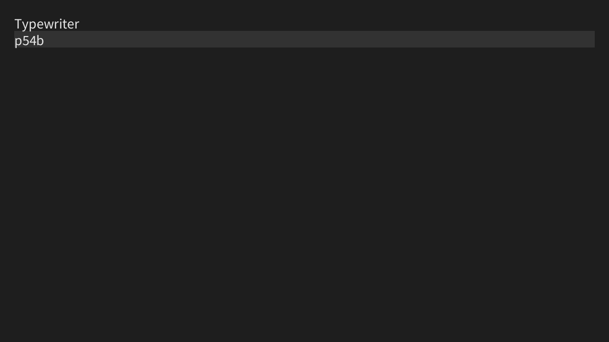

タイプライター
キーボードを使った作品を作ってみよう。
作るもの
今回は、キーを打ち込んで文章を書くことができるプログラムを作ってみよう。

文字列、どう管理する?
キーボードを入力すると、表示される文字列のデータに押したキーが追加されるようにしたい。
ここで、String型の変数とkey変数の足し算をすることで文字列を結合することができる。
String text="";//文章を管理する変数
//いろんな処理
void mousePressed(){
text=text+key;//文字列と文字を足して結合。
}
画面に表示するときは、上のサンプルでいうtext変数をtext();関数の中に入れればいい。
これをベースに仕組みを考えてみよう。
文字の確認
ただ単に文字列を結合するだけだと、ShiftキーやCtrlキーなどを押したときに不可解なものが入力されてしまう。
なので、前の節で解説した文字の判定を使ってみよう。
改行したい!
文字であることを判定できるようになったは良いものの、このままではEnterキーで改行することができない。
そこで、KeyCodeを使った判定を使う。
具体的には、こんなふうになる。
if(keyCode == ENTER){//Enterが押された
//処理
}
また、プログラムにおいて改行は\nという特殊な文字で表されるので、文章を保存している文字列に\nを足せば改行できるようになるはずだ。
解答例
今回のプログラム
String input;//入力された文字列
int line=0;//現在の改行数
float text_size=30;//テキストの大きさ
float text_leading=35;//行の高さ
float margin=30;//ウィンドウと描画位置の間の幅
void setup(){
size(1280,720);
input="";//初期化
textSize(text_size);//テキストの大きさを変更
textLeading(text_leading);//行の高さを変更
}
void draw(){
background(30);
fill(50);
noStroke();
rect(margin,margin+text_leading*line,width-margin*2,text_leading);//現在の行をハイライト
fill(230);
text(input,margin,margin+text_size);//テキストを表示
}
void keyPressed(){
if(key!=CODED&&keyCode!=DELETE&&keyCode!=BACKSPACE){//キーが文字でない、またはDeleteかBackspaceの場合は処理をスキップ
input+=key;//押されたキーの文字を連結
}
if(keyCode==ENTER){//Enterが押されたら改行数を更新
line++;
}
}
発展:削除や入力位置の変更を出来るようにする
※時間があったらやってみよう
前回紹介したStringBuilderを駆使することで、削除や入力位置の変更に対応させることができる。
いきなりすべて実装するのは難しいので、
String inputをStringBuilder inputに変更Backspaceによる削除に対応- 入力位置を変更できるようにする
Deleteによる削除に対応
の順番で実装するのが良いだろう。
発展版の解答例
StringBuilder input;
int caret_position=0;
float text_size=30;
float text_leading=35;
float margin=30;
void setup(){
size(1280,720);
input=new StringBuilder("");
fill(230);
stroke(230);
textSize(text_size);
textLeading(text_leading);
}
void draw(){
background(30);
String input_text=input.toString();
text(input_text,margin,margin+text_size);
String sub_text=input_text.substring(0,caret_position);
float h=count(sub_text,"\n")*text_leading;
float w=0;
if(!sub_text.endsWith("\n")){
String[] lines=sub_text.split("\n");
w=textWidth(lines[lines.length-1]);
}
line(margin+w,margin+h,margin+w,margin+h+text_size);
}
int count(String string,String target){
int c=0;
int i=0;
int len=target.length();
while ((i=string.indexOf(target,i))!=-1){
c++;
i+=len;
}
return c;
}
void keyPressed(){
if(keyCode==BACKSPACE){
if(caret_position>0){
input.deleteCharAt(caret_position-1);
caret_position--;
}
}else if(keyCode==DELETE){
if(caret_position<input.length()){
input.deleteCharAt(caret_position);
}
}else if(keyCode==LEFT){
if(caret_position>0)caret_position--;
}else if(keyCode==RIGHT){
if(caret_position<input.length())caret_position++;
}else if(key!=CODED){
input.insert(caret_position,key);
caret_position++;
}
}